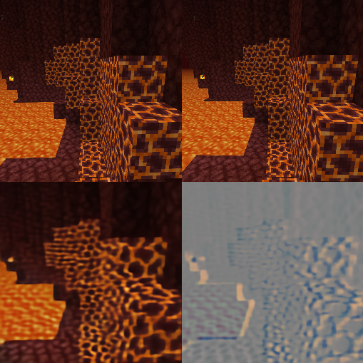
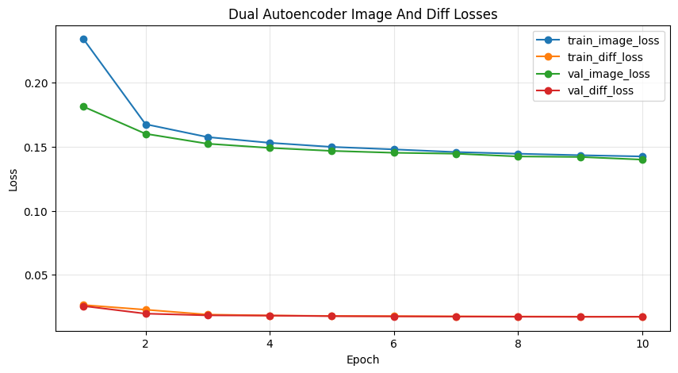
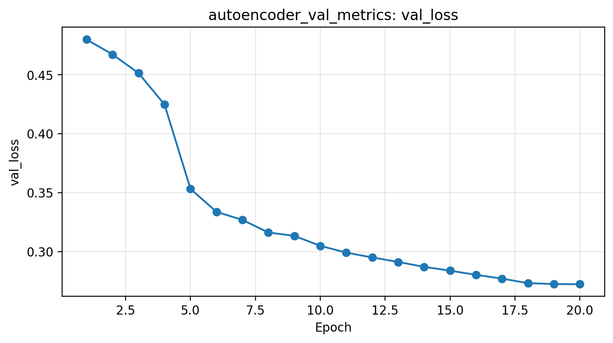
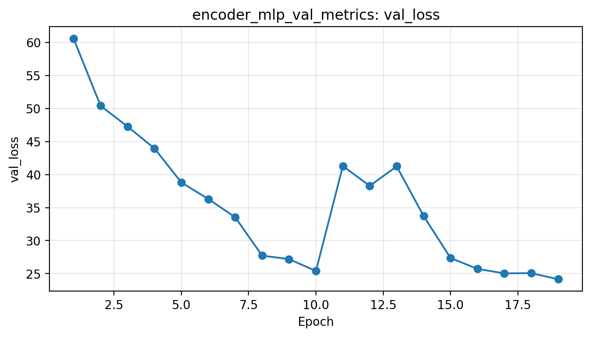
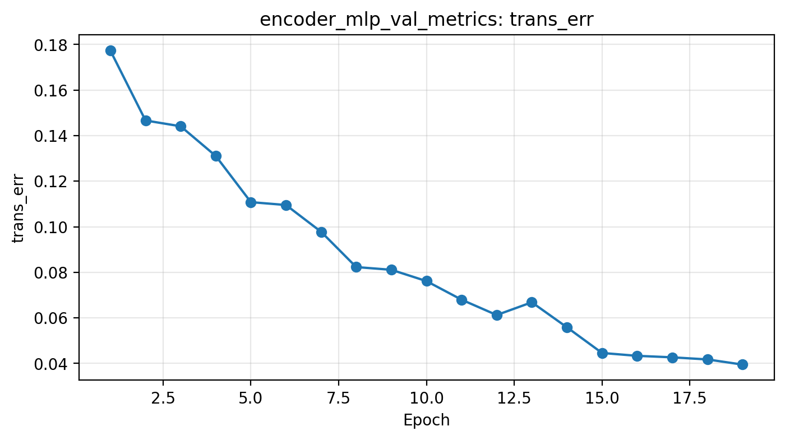
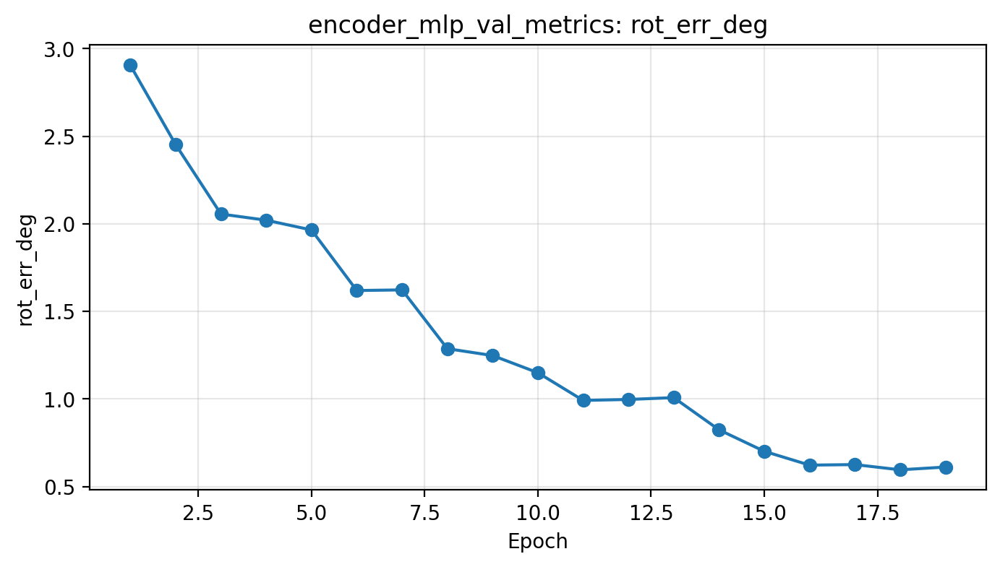

Introduction & Background
Visual Odometry (VO) is the task of estimating an agent's trajectory from a sequence of images by predicting the relative motion between consecutive frames and composing these transformations over time. Accurate VO is fundamental to robotics and autonomous systems, enabling navigation, localization, and state estimation without external positioning infrastructure.
In the Literature
Classical VO pipelines typically rely on feature detection and matching, and geometric optimization, and are commonly categorized as feature-based or appearance-based methods . While effective, these approaches are prone to drift accumulation and sensitivity to visual ambiguity, particularly in texture-poor or repetitive environments. A recent survey highlights a shift toward learning-based methods that replace hand-engineered features with neural representations, especially in monocular settings where scale and depth ambiguities remain significant challenges , .
The Dataset
To investigate learning-based VO in a controlled and reproducible setting, we introduce MineTrack, a visual odometry dataset and framework built in Minecraft. Using a custom logging mod, we record each frame as an RGB image paired with a time-synchronized 4×4 homogeneous transformation matrix representing the player's pose in the world coordinate frame. From these poses, we compute ground-truth relative transformation matrices between consecutive frames. Data collection includes structured motion sequences such as straight-line translation, in-place rotation, elevation changes, and curved trajectories across forests, plains, villages, caves, and varied terrain. Dataset collection and organization are ongoing, and the current midterm checkpoint focuses on validating the learning pipeline on the data gathered so far.
Problem Definition
Reliable motion estimation from visual input is a core requirement for autonomous navigation. Visual Odometry estimates trajectory by estimating consecutive transforms between camera poses. MineTrack tackles learning-based visual odometry in a controlled 3D environment. Given two consecutive RGB frames from Minecraft, we aim to predict the relative motion of the agent between frames (translation and rotation). By composing predicted frame-to-frame transforms over time, we reconstruct the full trajectory and measure drift versus ground truth.
Research Question
Do self-supervised visual embeddings learn geometry-relevant features that improve downstream relative pose regression and reduce trajectory drift?
Objectives
- Learn compact visual embeddings from Minecraft gameplay frames
- Predict frame-to-frame motion and compose predictions into trajectories
- Evaluate trajectory accuracy and drift versus ground truth across varied environments
Scope
Monocular RGB visual odometry in Minecraft with frame-to-frame pose regression and trajectory reconstruction via transform composition.
Motivation
Minecraft provides easier data collection and a more constrained environment than the real world, allowing for easier model development and testing. Models validated in Minecraft can later be transferred to photorealistic simulators with more realistic physics engines and sensor modules, with the ultimate goal being SLAM in real-world environments.
Methods
Implemented Solution Overview
At the midterm checkpoint, we have implemented a learning-based visual odometry pipeline centered around self-supervised visual representation learning and supervised pose regression. Our approach uses autoencoder-based models to compress Minecraft image data into lower-dimensional latent vectors, followed by an MLP regressor that predicts frame-to-frame motion from those learned features. We have implemented and tested both a single-image autoencoder and a dual-image autoencoder, and we use the learned encoder outputs as compact feature representations for downstream transform prediction.
Data Processing Methods
Our dataset is generated from logged Minecraft gameplay. Each captured RGB frame is paired with a synchronized 4×4 homogeneous pose matrix representing the player pose in world coordinates. During preprocessing, frames are organized into temporally adjacent pairs, and the relative transform between frame n and frame n+1 is computed from the corresponding pose matrices. These relative transforms are then converted into a regression target consisting of 6D rotation and 3D translation.
This preprocessing pipeline was selected because the visual odometry task is naturally defined in terms of motion between consecutive frames. Pairing adjacent images with their relative transforms provides direct supervision for pose regression, while also supporting self-supervised pretraining of the encoder on the image data itself. This makes it possible to train the visual feature extractor without manual labels and then reuse the learned encoder in the downstream motion estimation model.
Single-Image Autoencoder
Our first implemented representation-learning model is a single-image autoencoder. This model takes a single Minecraft image as input, compresses it into a constrained latent feature vector, and attempts to reconstruct the same image from that vector. The latent embedding is designed to be much lower-dimensional than the raw image input, reducing hundreds of thousands of pixel values to a more manageable representation for later models to process.
We selected this model because it provides an efficient way to reduce input dimensionality while learning information-dense visual features in a self-supervised manner. The encoder portion of the model is integrated into the broader visual odometry pipeline as the image-processing front end. This also gives us a clean baseline for evaluating whether reconstruction-trained embeddings preserve enough geometry-relevant information for downstream transform regression.
Dual Autoencoder
We also implemented a second-generation dual autoencoder designed to better capture motion-relevant information between consecutive frames. Instead of taking only one image, this model ingests two sequential frames. It compresses the pair into a latent vector of a few thousand dimensions and is trained to reconstruct both the first image and a difference image representing changes between the first and second frames.
This architecture was selected because it encourages the latent representation to encode not only scene content, but also incremental changes between neighboring images. By learning to reconstruct both the original image and the image-to-image difference, the encoder is pushed to relate features in one frame to features in the next, which is directly relevant to motion tracking. Like the single-image autoencoder, this is a self-supervised learning method that allows us to pretrain the encoder efficiently on the available image data.
Compared with the single-image autoencoder, the dual autoencoder produces a joint representation from both frames in one pass. In principle, this can simplify downstream inference, since the MLP regressor only needs one latent vector per frame pair. However, the single-image autoencoder remains competitive from a compute perspective because its encoded vectors can be reused across overlapping MLP inputs, where the second embedding from one frame pair becomes the first embedding for the next.
MLP Transform Regressor
For downstream motion estimation, we implemented an MLP-based transform regressor. In the current pipeline, the MLP ingests the latent vector produced by the dual autoencoder and outputs a relative motion estimate between the two input frames. The regression target is parameterized as 6D rotation and 3D translation.
The training script constructs these targets by taking frames n and n+1, computing their relative transform from the logged pose data, and training the MLP head to regress that transform. We selected an MLP for this stage because it provides a simple and interpretable baseline for testing whether the learned latent representation contains enough information to support pose estimation. This lets us evaluate the usefulness of the encoder features before moving to more complex temporal or sequence-based models.
Why These Methods Were Selected
The implemented methods were chosen to balance feasibility, interpretability, and relevance to the project goal. Autoencoders provide a practical self-supervised way to compress high-dimensional image data into compact latent features, which is important because raw RGB frames are too large to feed directly into a lightweight regression model. The single-image autoencoder serves as a baseline dimensionality-reduction method, while the dual autoencoder is intended to make motion-related changes more explicit in the representation. The MLP regressor was chosen as a simple supervised model that can test whether these learned latent vectors are informative enough for relative pose prediction.
Current Implementation Status
At this stage, we have implemented the Minecraft data preprocessing pipeline, the single-image autoencoder, the dual autoencoder, and the MLP transform regressor. We have trained these models on collected data and generated preliminary reconstruction examples, loss curves, and pose-related error visualizations. These experiments provide an initial checkpoint on both the quality of the learned image representations and the feasibility of downstream transform regression using latent features.
Evaluation Strategy
For the midterm checkpoint, we evaluate the implemented models using both qualitative and quantitative results. Reconstruction figures are used to assess whether the autoencoders preserve meaningful visual content and frame-to-frame differences. Training loss curves are used to measure convergence during encoder and regressor training. For the downstream transform regressor, we evaluate performance using transformation and rotation error plots derived from predicted relative motion versus ground truth. Together, these results help us determine whether the learned latent vectors are useful for visual odometry and where the current pipeline still needs improvement.
Implementation Stack
- Programming Language: Python for model training and evaluation, Java for the Minecraft data collection mod
- ML Libraries: PyTorch
- Data Processing: NumPy, PIL, OpenCV
- Visualization: Matplotlib
Results & Discussion
Summary of Current Results
At the midterm checkpoint, we have obtained preliminary results for our self-supervised encoder models and for the downstream transform regression pipeline. These results include reconstruction outputs, autoencoder and MLP training loss curves, transform-related error plots, and a trajectory/yaw comparison plot. Together, these provide an initial view of reconstruction quality, training behavior, and downstream motion prediction performance.
Autoencoder Reconstruction Results
Reconstruction outputs provide a qualitative view of what information is retained in the learned latent space. For the single-image autoencoder, the model compresses one Minecraft frame and reconstructs that same frame. For the dual autoencoder, the model takes two sequential frames and reconstructs the first image together with an image difference between the first and second frames.
In practice, the autoencoders were significantly easier to train than the downstream MLP regressor. With straightforward hyperparameters, the autoencoder models produced strong results after roughly 10-20 epochs. This made the autoencoder stage much easier to train and evaluate during the current checkpoint.


Training Loss Results
We use training loss curves to compare convergence behavior for both the autoencoder stage and the downstream MLP regressor. The autoencoder loss plots show how reconstruction loss changes during training, while the MLP loss plots show how transform regression loss changes during training. We collected these plots across multiple training runs, including experiments performed on RTX 5070 and RTX 3070 GPUs.
The loss curves also highlight an important difference between stages of the pipeline. While the autoencoders trained relatively smoothly with straightforward settings, the MLP regressor required substantially more effort to obtain useful behavior. Early versions of the regressor frequently converged to a degenerate solution in which the model predicted an identity transform rather than the desired nonzero relative motion. Although reducing the learning rate helped limit this collapse somewhat, the resulting training behavior was still unsatisfactory.



MLP training loss for the downstream pose regressor on an RTX 5070 GPU.


Pose Prediction Performance
For the dual autoencoder pipeline, we also evaluate downstream transform prediction using transformation and rotation error plots. These plots compare predicted relative motion against ground truth and provide a direct view of transform regression performance.
To address the identity-transform failure mode, we modified the loss function by adding a term that penalizes differences in magnitude between the predicted and ground-truth location transforms. This discouraged the model from collapsing to identity outputs and made training more effective. After introducing this loss term, we were able to increase the learning rate from 1e-4 to 1e-3 without returning to the same degenerate behavior.



Top-down trajectory (X-Z) and yaw angle over time, comparing estimated motion to ground truth.
Interpretation of Results
The current results show that the implemented pipeline can be trained end-to-end and that both reconstruction outputs and regression outputs can be generated from the collected data. The autoencoder results were easier to obtain and were more stable early in development, while the downstream regression stage required more tuning to avoid degenerate behavior. At this checkpoint, the transform and rotation error plots are the most important indicators of downstream motion prediction performance.
One likely reason for the stronger autoencoder results is that image reconstruction was easier to optimize than downstream transform regression in our current setup. The single-image autoencoder and dual autoencoder both trained successfully with relatively straightforward hyperparameters, while the MLP regressor was much more sensitive to training setup and loss design.
The difference between the two autoencoder designs may also matter. The single-image autoencoder is trained only to reconstruct one frame, while the dual autoencoder is trained using two sequential frames and an image-difference target. Since the dual model includes information from two adjacent frames, it may be better suited for downstream motion estimation, though this comparison is still ongoing.
For the MLP regressor, one major challenge was the identity-transform failure mode. In practice, modifying the loss function to penalize differences in transform magnitude was necessary to stop this behavior and obtain more useful training results.
Planned Improvements
Our next step is to compare the single-image and dual-autoencoder pipelines more directly and determine which latent representation performs better for downstream pose prediction. We also plan to continue tuning latent dimensionality, reconstruction objectives, and training settings. On the regression side, future work may include further refining the loss function, improving target parameterization, and trying alternative downstream models if the MLP baseline remains too limited. We also plan to continue expanding the dataset and refining preprocessing.
Awards
We opt in to the "Outstanding Project" award contest.